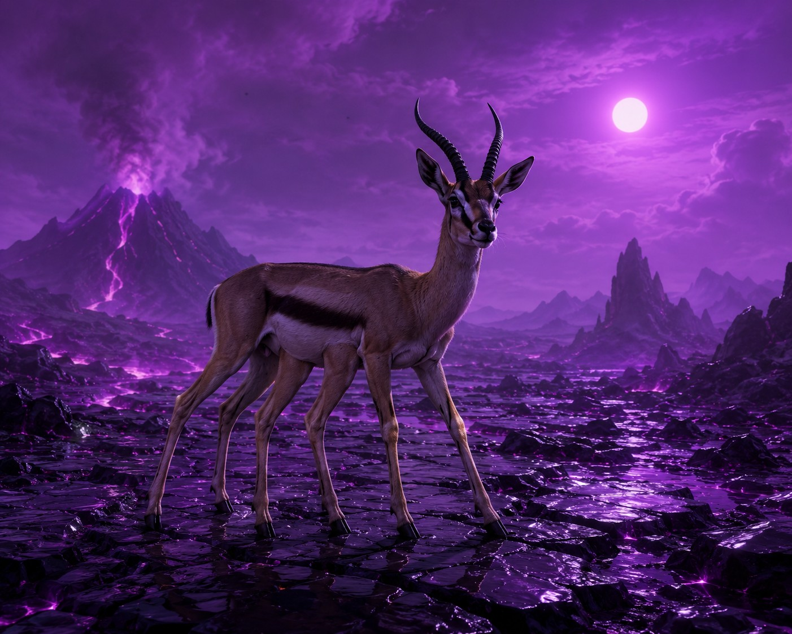
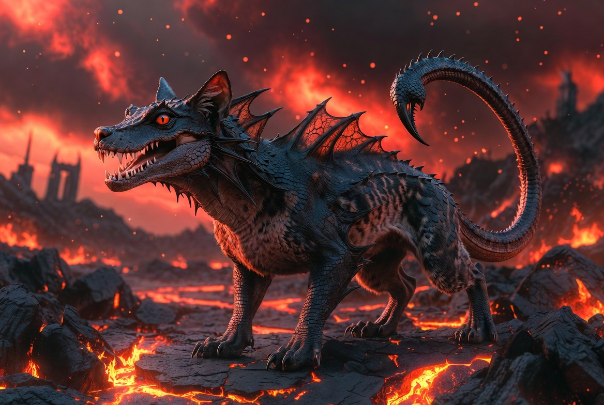

Here is something nobody warns you about when you sit down to invent alien wildlife: you cannot invent just one animal. The moment you put a single creature on the ground, it starts asking questions you have to answer. What does it eat? What eats it? Where does it hide, and what is it hiding from?
The planet in The Emotion Engine is not a friendly place. Its own people built cities there, and then, for reasons Shaden spends most of the book piecing together, they left. Evacuated the entire world. What they did not take with them was the wildlife. The animals stayed. Life kept going without anyone to watch it, and by the time Shaden arrives, the plains and the ruins and the tunnels underneath have all been quietly claimed by things that were never asked to leave.
So when I started designing that wildlife, I could not just draw one interesting monster and call it a day. I had to build a chain. Something to graze, something to hunt the grazers, and something living in a corner of the world the other two never touch. Three creatures so far. Here is how each of them came to be, and what building the second one taught me about the first.
The Hexlings

The hexlings came first, and they came first for Shaden too. He names them within minutes of seeing them, because naming is a task and tasks are where he feels safe. The name is exactly as literal as he is: hex, for six. Six legs. A grazing animal, roughly the size and temperament of an antelope, built low and steady for covering open ground under a purple sun.
For a long time there was only one kind of hexling. Then the world got bigger than I planned, and so did they. There are two breeds now. The larger ones still roam the plains, out in the open where they have always been. But a smaller breed has done something I did not expect until I sat down and really thought about where an animal goes when the people vanish: they have moved into the cities. The empty streets, the collapsed buildings, the shade and shelter of everything the old civilization left behind. The ruins are not empty. They are full of small hexlings that have decided the safest place on the planet is the one nobody else wants.
The Velokai

Once I had something grazing the plains, I needed something to hunt it. A prey animal with no predator is not really a prey animal. It is just an animal, and the plains felt too safe.
The velokai is the answer. It is the apex predator of the open ground: feathered, fast, and wrong in a way I struggled to describe until I saw it rendered. Too many eyes, clustered where two should be, so it never quite looks at you and never quite looks away. It runs hexlings down across the plains the way the old murals in the caves show it always has. Predator and prey, painted on a wall by hands that have been dust for thousands of years, still playing out on the ground above.
Here is the small ecological accident I love. The velokai hunts the plains. It does not go into the cities. Which means the smaller hexlings, the ones that gave up the open ground for the ruins, may have stumbled into the one place on the planet the fastest thing alive cannot reach them. They did not outrun the predator. They just moved somewhere it will not follow.
The Scrappion

The scrappion is the newest, and it is still finding its place in the world. It does not live on the plains at all. It lives underneath them, in the volcanic tunnel systems that run below the surface, where the heat is and the light is not.
It is small, about the size of a cat, which is easy to underestimate right up until you notice there is never only one. Scrappions move in packs. Each one carries its venom in its tail, curled and ready, which is where the name came from: a scrappy, scrapping, scorpion-tailed thing that fights in numbers and lives somewhere nothing sensible would go. It belongs to a different world than the hexlings and the velokai, a hotter and darker one, and building it meant building a whole second biome underneath the first.
The Names
A quick word on the names, because they are not mine. Not really. They are Shaden's.
Every creature in this book gets its name from a man who names things instead of feeling them. That was a rule I set early, and it turned out to shape everything. Hexling is what a methodical, emotionally flat scientist calls a six-legged animal with a recorder running. Scrappion is the same instinct pointed at something with a stinger. They are functional names, descriptive names, the names of someone cataloguing a world rather than falling in love with it. Velokai is the one exception, the name that does not announce what it means, and I let it stay strange on purpose. Some things on that planet Shaden names. A few he only gestures at, because even he can tell they are older than his vocabulary for them.
Why Any of This Matters
None of this is the plot. A reader could skim past every creature in the book and still follow the story just fine. But the world would feel thinner, and I would know. Building a food chain nobody strictly needs is the kind of work that does not show up on the page so much as underneath it, holding everything else up.
Three creatures down. I suspect the tunnels are hiding more than the scrappion, and I suspect I will not know what until I go down there with Shaden and find out. The book is still on track for November 2026. The ecosystem, apparently, is still growing.
—Charles